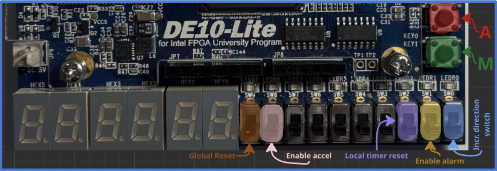
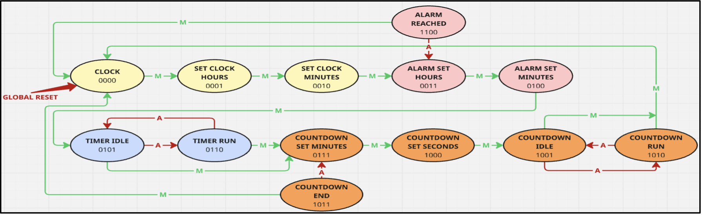
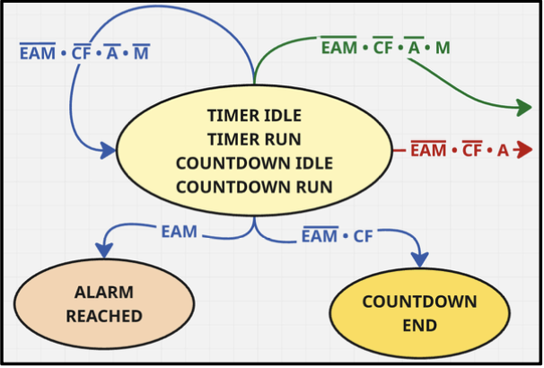
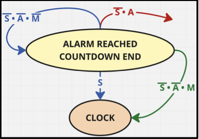
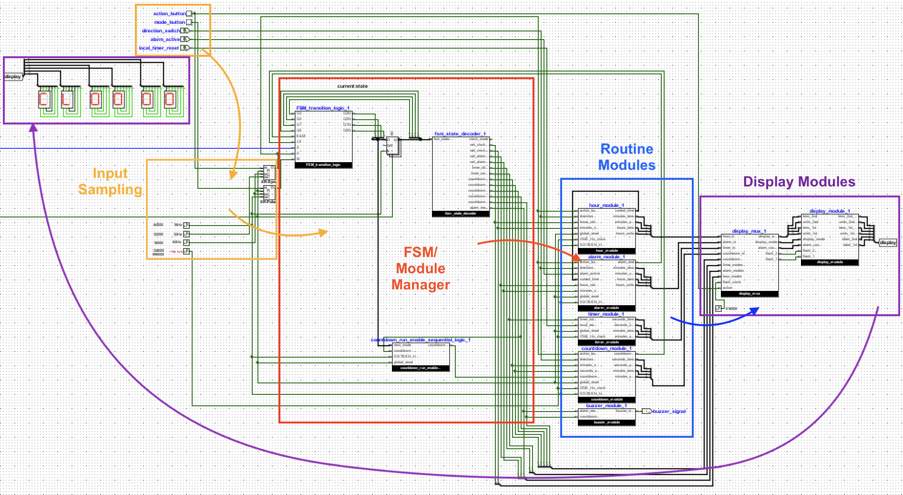
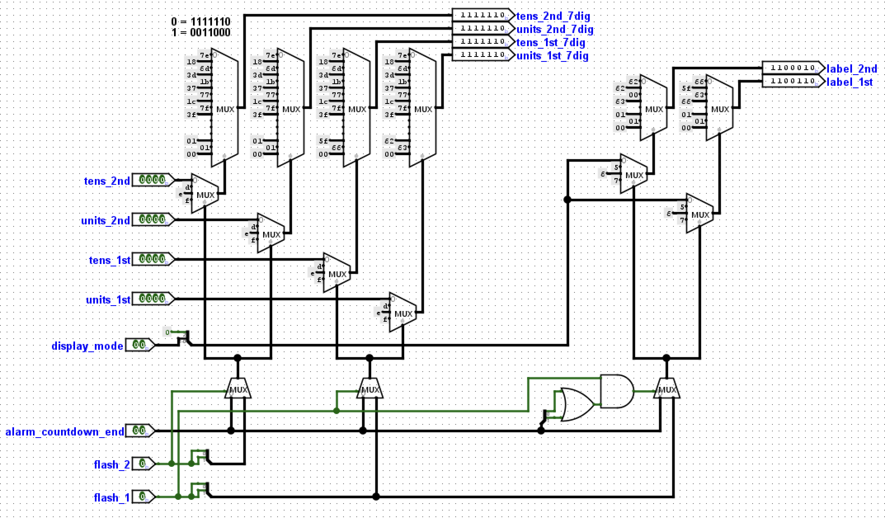

LOGIC SYSTEMS · 2025
Logisim Clock
Digital smart-watch with multiple features (Clock, Alarm, Timer, Countdown). Designed for the Intel DE10-Lite FPGA, programmed and simulated in Logisim-Evolution before deployment.
System architecture
SYSTEM ARCHITECTURE
Board layout and controls

Master buttons: M - "Mode" navigates from mode to mode, A - "Action" interacts within specific modes (starting timer or setting countdown)
Complete state machine

FSM Structure - M (in green) runs cyclically through Clock, Alarm, Timer, and Countdown
03 Interrupt conditions

All modes run in the background, only one mode is displayed
04 Leaving an interrupt

"Alarm Reached" and "Countdown End" must be exited via M or by Shaking (S) the clock
Architecture Overview
13 modes require a minimum of 4 bits to encode in an FSM (Finite State Machine). We start with 3 Clock modes, 2 of which are Clock-setters. The next 2 Alarm modes are Alarm-setters, with the Alarm being activated by a switch. The "Timer Run" mode is skipped if no Action (A) is taken to start the Timer. Countdown modes combine the principles of Clock-setting and Timer Running, but decrementing. All modules have overflow logic, and incrementation/decrementation can be toggled via switch for all setters.
When an interrupt like "Alarm Reached" or "Countdown End" is triggered, the board beeps and a pattern flashes on the display until the interrupt is exited. When an interrupt is exited, we are brought back to Clock mode. A Global Reset can also be effectuated via switch, reinitializing the board and bringing us back to Clock mode.
Logisim implementation
LOGISIM IMPLEMENTATION
Top-level circuit

Highly modular approach, clearly distinguishable Input, FSM Management, Routines, and Display. Open the image for a readable full-size view.
Display module

4x 7-segs are dedicated to digits (Hours-Minutes or Minutes-Seconds), 2x 7-segs are dedicated to a Mode Label (CL, AL, T, or CT)
Building in Logisim
As a collaborative project, my teammate and I took great care to make our schematics modular. Our top-level circuit has almost no logic gates at all, only custom-defined modules.
The Display module gives a glance at the logic gates under the hood, at an implementation which I consider special. This module serves to convert binary inputs to corresponding 7-seg display outputs, where a sequence of 7 bits illuminates different segments on the display. I found that multiplexers (MUX) can be used to encode this mapping, and by staging MUXs I could more finely control the display. Logisim-Evolution has a built-in module which converts binary numbers to 7-seg digits, but by developing a custom mapping I could extend compatibility to encode letters and symbols as well, and implement a display-flashing mechanic.
Another challenge was button input sampling. I implemented a "Synchronizer" module which served to detect an asynchronous button press and release it into the system only on the system clock's rising edge, to ensure proper signal flow. I also implemented a "Pulse" module which converts a long button press into a system-synchronized square signal, practical when using Setters as a long press allows for continuous incrementation/decrementation.
Documentation
Report and demonstration
Project Report
Full report — State Machine Design and Module Breakdown
Open ↗ VideoLogisim Clock Demo
Short demo of the clock, timer, countdown and alarm on the board
Open ↗Team and contributions
| Member | Contributions |
|---|---|
| Lucas de Boi | System Architecture, FSM Design and Implementation, Accelerometer Implementation, Demo Video |
| Daniel Lelescu | Input Sampling Implementation, Routine Module Implementation, Display Implementation |
Explore more engineering projects
Head back to the portfolio for robotics, embedded systems, and mechanical design work - or get in touch directly.